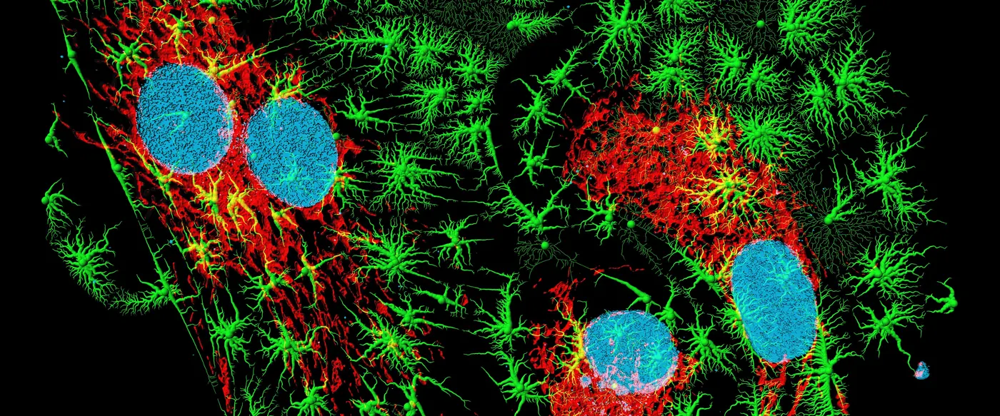

The science
Psychologists, geneticists, neuroscientists and biologists asked the same questions people still argue about at dinner tables. Their answers line up.

WHO, the American Psychiatric Association and the Indian Psychiatric Society all say so.
Orientation emerges from biology and development. Nobody picks whom they're attracted to.
Change attempts don't work and are linked to depression and suicide attempts.
Same-sex behaviour is documented in hundreds of animal species.
Truthfulness first. Scientists agree that sexual orientation is not chosen and is not an illness. What they still study is exactly how it develops: the current picture is many genetic, hormonal and other biological influences, with no single cause and no "gay gene." That open question is about mechanism, never about whether queer people are real or valid. This site shows the limits of each study too, because honest evidence is the strongest kind.
Who agrees
Who agrees
Not one opinion, but decades of independent review by the institutions that define health.
Question by question
The evidence
Is it an illness?
The first rigorous test came in 1957. Psychologist Evelyn Hooker gave personality tests to 30 gay and 30 straight men who weren't patients, then asked expert clinicians to tell them apart. They couldn't. The gay men were as psychologically healthy as everyone else. By 1973 the American Psychiatric Association had removed homosexuality from its manual; the WHO followed in 1990.
Why do surveys still find more anxiety and depression among queer people? Ilan Meyer's minority stress model (2003) answers it: the extra distress comes from stigma, rejection, discrimination and the strain of hiding, not from orientation itself. Where societies become safer, the gap narrows. Read the studies
Is it a choice?
If you ask a straight person when they chose to be straight, they have no answer. The research reaches the same place from several directions:
- Twins. In a Swedish study of about 3,800 twin pairs, genes explained roughly a third of the variation in men's same-sex behaviour and a fifth in women's. Shared upbringing explained almost none.
- Genetics. The 2019 analysis of 477,522 people found no single "gay gene," but many tiny genetic influences that together explain part of the variation. The authors warned that nobody's orientation can be predicted from DNA.
- Before birth. Each older brother born to the same mother raises the odds that a man is gay, but older stepbrothers raised alongside him have no effect. That points to the womb, not the household.
- The brain. Imaging and post-mortem studies have found small group differences. They're early clues, not proof of cause.
What people choose is whether to hide their feelings. They never choose whether to have them. Read the studies
Can it be changed?
The American Psychological Association's 2009 task force reviewed decades of "change efforts" and found no reliable evidence they work, and evidence they can cause harm. Later surveys link such attempts to higher rates of depression and suicide attempts. India's medical commission now treats conversion therapy by doctors as professional misconduct. There is nothing to cure. Read the studies
Is it unnatural?
Same-sex behaviour has been recorded in hundreds of animal species, and in every human society studied. A 2019 paper in Nature Ecology & Evolution argues it may have been part of animal life since early in evolution, rather than an oddity that needs a special explanation. Read the study
The twin study
Twin studies
Genes explained roughly a third of the variation in men's same-sex behaviour. Shared upbringing explained almost nothing. The rest came from individual factors, including conditions before birth.
The yellow sliver is shared upbringing. Approximate figures for men, from Långström et al., 2010.
Attitudes shift
Attitudes in India
Pew Research asked Indians whether society should accept homosexuality. In five years, acceptance more than doubled.
Source: Pew Research Center, 2020.
26 papers, every limit stated
Read the studies yourself. Open the research library